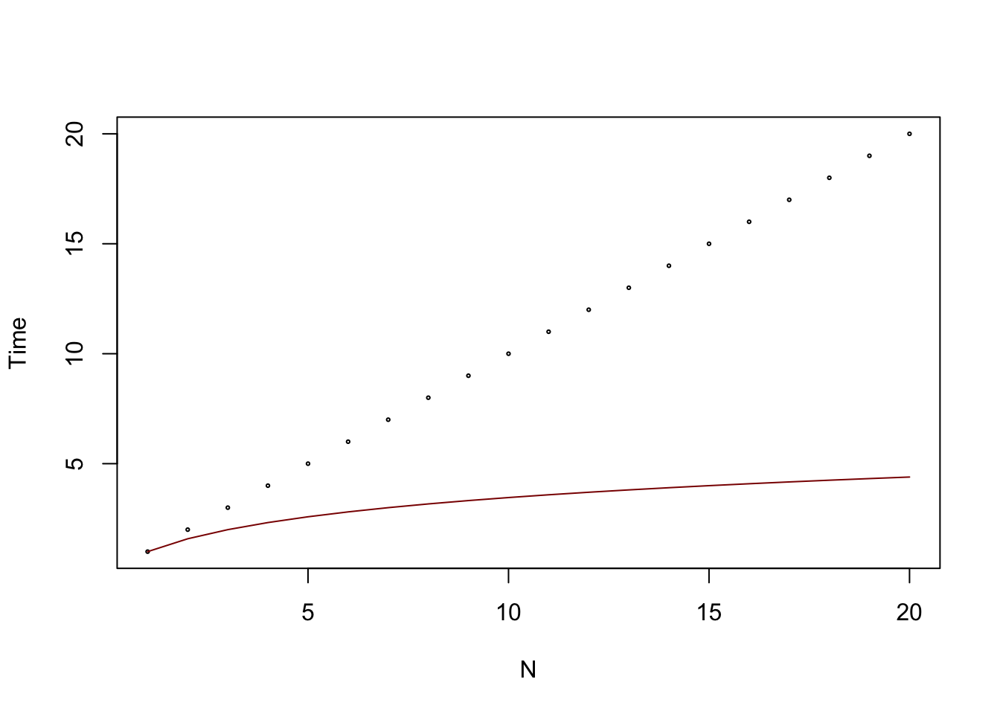

sample_set <- sample(1:100,10) |> unique()
search_value <- sample(sample_set,1)
sample_set [1] 71 9 16 31 95 63 5 69 11 18Ivann Schlosser
This post will go through the logic behind using indexation, give example algorithms and implementations for simple cases of spatial data. By the end of it, you will understand why is indexing such an important aspect of manipulating data, what are the most common indexing methods, and how to use them with spatial data.
There are many ways to index data in order to speed up the operations one might need to do with it. They are adapted for various tasks and types of data, this post will keep it simple and be an introductory walk into indexing for searching in spatial points. The most obvious operations one might need to do is search. In an unordered set with \(N\) elements, the complexity of finding a specific one scales with the size of the set. When studying the complexity of an algorithm, we are interested in knowing the worst case scenario performance under the implemented algorithm for a given parameter of the data, such as the size \(N\). We note the complexity of the algorithm as a function of the parameter with the big O notation \(O(N)\). The complexity of an algorithm can become a big expression when we start adding up all the individual contributions of operations as a function of \(N\). Therefore, only the term of dominant magnitude is kept. For example, if we have an algorithm that first visits each data point to check a condition and then performs an operation between all the pairs of data points, we could write the complexity as \(O(N + N^2)\), however the first element of this sum will be insignificant as \(N\) increases and therefore we only keep the second one, \(O(N^2)\). Example, we have 10 data points and we first validate the data by visiting each point individually (10 operations), then we compute the distance for each pair of points (10*10=100 multiplications). The total will be 110, but overall we are limited in our computing capabilities by the step that took us 100 operations. This becomes even more obvious as \(N\) increases, say for \(N=100,1000…\).
[1] 71 9 16 31 95 63 5 69 11 18Now let’s consider the fact that the set we are looking at contains numbers, or what we really mean by that, is that it is ordered, therefore, we can arrange the elements in a specific way.
Now let’s try using this order in our search, say we look for a specific number like 9 and its location in the set, we might go on looking for other numbers that have a similar value, and we will expect the number we look for, if it is in the set, to be somewhere nearby. We can make a function to do this by breaking the set into 2 subsets, each contains respectively values that are greater or smaller than the median value of the set. We can easily get the median by looking at the middle of the set, since it is ordered.
subsets_list <- list()
set_median <- median(sample_set)
subsets_list[["left"]] <- sample_set[sample_set<set_median]
subsets_list[["right"]] <- sample_set[sample_set>=set_median]
subsets_list$left
[1] 5 9 11 16 18
$right
[1] 31 63 69 71 95we call the left subset the values smaller than the median, and the right subset the values greater than the median. Depending on whether the number we look for is greater or smaller than the median, we will restrict our search to the left or right set.
if(search_value<set_median) {
updated_subset <- list()
set_median <- median(subsets_list[["left"]])
updated_subset[["left"]] <- subsets_list[["left"]][subsets_list[["left"]]<set_median]
updated_subset[["right"]] <- subsets_list[["left"]][subsets_list[["left"]]>=set_median]
subsets_list <- updated_subset
} else {
updated_subset <- list()
set_median <- median(subsets_list[["right"]])
updated_subset[["left"]] <- subsets_list[["right"]][subsets_list[["right"]]<set_median]
updated_subset[["right"]] <- subsets_list[["right"]][subsets_list[["right"]]>=set_median]
subsets_list <- updated_subset
}
subsets_list$left
[1] 5 9
$right
[1] 11 16 18The previous code cell shows how we perform a step in the search algorithm. At each step, we focus on a narrower interval with less data in it until we find our match. So this step can be repeated until we are left with only 1 single value, and if the value matches our search value, then we found it (!). If it does not match exactly our value, then we have found the approximate nearest neighbor of our value in the set. This is an important point especially in spatial data.
Therefore, we can have a function that looks the following way to find a value in a set:
in_ordered_set <- function(set, x){
# In case not ordered.
set <- set[ordered(set)]
# to tell the while loop to continue
found <- FALSE
set_median <- median(set)
subsets_list[["left"]] <- set[set < set_median]
subsets_list[["right"]] <- set[set >= set_median]
while(!found) {
if(x<set_median) {
if(length(subsets_list[["left"]])==1 && subsets_list[["left"]][1]==x) return(TRUE)
updated_subset <- list()
set_median <- median(subsets_list[["left"]])
updated_subset[["left"]] <- subsets_list[["left"]][subsets_list[["left"]]<set_median]
updated_subset[["right"]] <- subsets_list[["left"]][subsets_list[["left"]]>=set_median]
subsets_list <- updated_subset
} else {
if(length(subsets_list[["right"]])==1 && subsets_list[["right"]][1]==x) return(TRUE)
updated_subset <- list()
set_median <- median(subsets_list[["right"]])
updated_subset[["left"]] <- subsets_list[["right"]][subsets_list[["right"]]<set_median]
updated_subset[["right"]] <- subsets_list[["right"]][subsets_list[["right"]]>=set_median]
subsets_list <- updated_subset
}
}
return(found)
}And applied to this example data:
And for the nearest neighbor value, we simply return the final value we found at the end of the iteration, so with minor changes, the function looks like that:
nearest_neighbour <- function(set, x){
# In case not ordered.
set <- set[ordered(set)]
found <- FALSE
subsets_list <- list()
set_median <- median(set)
subsets_list[["left"]] <- set[set<set_median]
subsets_list[["right"]] <- set[set>=set_median]
while(!found) {
if(x<set_median) {
# this will break the while loop
if(length(subsets_list[["left"]])==1) return(subsets_list[["left"]][1])
updated_subset <- list()
set_median <- median(subsets_list[["left"]])
updated_subset[["left"]] <- subsets_list[["left"]][subsets_list[["left"]]<set_median]
updated_subset[["right"]] <- subsets_list[["left"]][subsets_list[["left"]]>=set_median]
subsets_list <- updated_subset
} else {
# this will break the while loop
if(length(subsets_list[["right"]])==1) return(subsets_list[["right"]][1])
updated_subset <- list()
set_median <- median(subsets_list[["right"]])
updated_subset[["left"]] <- subsets_list[["right"]][subsets_list[["right"]]<set_median]
updated_subset[["right"]] <- subsets_list[["right"]][subsets_list[["right"]]>=set_median]
subsets_list <- updated_subset
}
}
# this is not actually required, as unless there is an error in input, the function will return from inside the while loop
return(NULL)
}And the nearest neighbor of our search value, a random number between \(0\) and \(100\) for example could be:
This algorithm is actually called the approximate nearest neighbor search, because is some cases when the search value is very close to the median of one of the intervals, it can give the second nearest neighbor instead.
Now going back to the discussion on algorithm complexity, how can we measure the complexity of finding an element in an ordered set by this method ? At each step, we divide the original set by 2, until we are left with a single value. In other words, how many time do we need to divide the length of the set by 2 to get one. This value is the logarithm of base 2 of the size of the set, and it’s the maximum number of step this algorithm can take to find something, so \(O(N)=log_2(N)\).
So why would we do this ? Because the logarithm grows much slower than the linear function, and therefore, we will find elements much faster in an ordered set using this method instead. Here is both curves visualised:
x <- seq(from = 1, to = 1e6, by = 1000)
x_2 <- seq(from = 1, to = 20)
plot(x_2,x_2,cex=.3,xlab = "N", ylab = "Time")
lines(x_2,log2(1+x_2),col="darkred")
| linear | log2 | |
|---|---|---|
| 996 | 995001 | 19.92434 |
| 997 | 996001 | 19.92579 |
| 998 | 997001 | 19.92724 |
| 999 | 998001 | 19.92868 |
| 1000 | 999001 | 19.93013 |
In the worst case scenario for the linear algorithm, it would require almost a million steps to find our value, while with the ordered set and adapted algorithm, it would be 20 steps !!! The sizes of data that we manipulate regularly are in the thousands and even sometimes millions of rows, so imagine the performance boost we get from using adapted algorithms. The method that was just described is one of the most famous search algorithms called the Binary Search Tree, or B-tree.
This post aimed to explain in a very simple way and with a concrete example develop the algorithm for efficient search in lists of numbers. A future blog post will generalise this method and look at cases in which data has more dimensions, typically 2 or 3, which is very relevant for spatial data for example, where each data entry is a pair of coordinates.